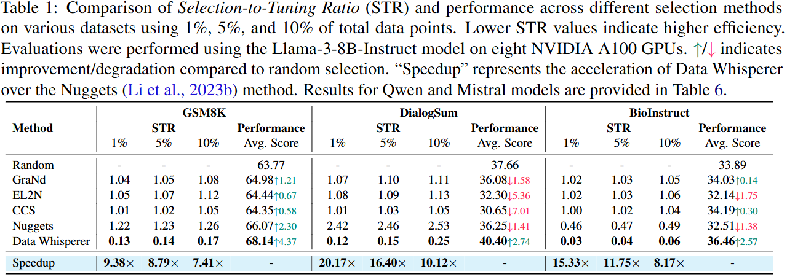

TL;DR: We propose an efficient, training-free, attention-based task-specific data selection method that leverages few-shot in-context learning with a pre-trained LLM.
Selection-to-Tuning Ratio. We critically examine existing data selection approaches and introduce the Selection-to-Tuning Ratio, a novel metric that quantifies the efficiency of these methods. We observed that all prior data selection methods are more inefficient than finetuning the LLM with the entire dataset.
Data Whisperer. We propose Data Whisperer, an effective, training-free and attention-based method. Unlike previous approaches, our method eliminates the need to fine-tune a separate scoring model on the target dataset, ensuring greater efficiency.
Compatibility with Weak-to-Strong Few-shot ICL. Data Whisperer integrates seamlessly with weak-to-strong few-shot ICL schemes, enabling effective performance even when a weaker model within the same model family is employed for ICL. This enhances both the scalability and efficiency of our method.
Experimental Results. Comprehensive experiments are conducted on both real and synthetic datasets across various selection budget ratios, including BioInstruct, DialogSum, and GSM8K. We observe that Data Whisperer consistently outperforms previous SOTA methods, particularly in smaller data scenarios, while achieving faster selection times.
We first critically reevaluate the effectiveness of existing selection methods. To quantitatively and fairly assess the effectiveness of each method, we introduce the Selection-to-Tuning Ratio (STR), which is defined as the ratio of time spent on selection to the time required for fine-tuning the model on the entire dataset. Formally, let \( t_p(\tau,\rho) \) represent the time associated with a selection method \( \tau \) with a budget subset ratio \( \rho \), and let \( t_{ft} \) denote the corresponding fine-tuning time for the entire dataset. The STR is given by:
$$\text{STR}(\tau) = \frac{t_p(\tau,\rho)}{t_{ft}}.$$
Ablation on the weak-to-strong scalability. For Qwen models, we used Qwen-2.5-3B-Instruct to perform Data Whisperer for Qwen-2.5-7B-Instruct. For Mistral models, we used Mistral-7B-Instruct-v0.2 to perform Data Whisperer for Mistral-Nemo-Instruct-2407. Weaker models were not fine-tuned on the task dataset. We found that using a weaker model does not significantly affect performance and provides a more efficient solution (measured by STR). Best viewed in color.
@article{wang2025datawhisperer,
title = {Data Whisperer: Efficient Data Selection for Task-Specific LLM Fine-Tuning via Few-Shot In-Context Learning},
author = {Wang, Shaobo and Jin, Xiangqi and Wang, Ziming and Wang, Jize and Zhang, Jiajun and Li, Kaixin and Wen, Zichen and Li, Zhong and He, Conghui and Hu, Xuming and Zhang, Linfeng},
year = {2025},
journal = {Annual Meeting of the Association for Computational Linguistics},
}
}